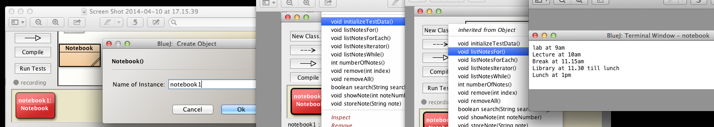
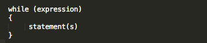
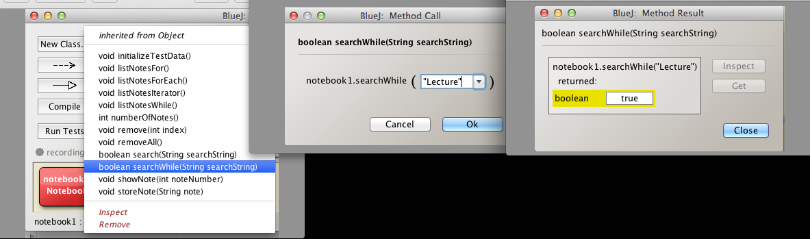
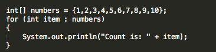
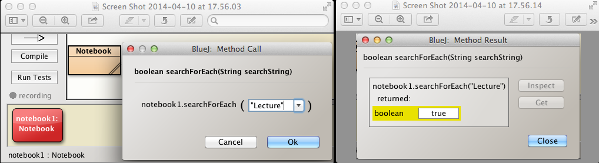
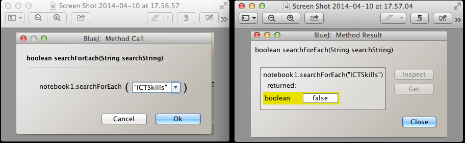

Solutions
These are the solutions to the exercises set in the session Grouping Objects and relating to
- BlueJ Notebook class
Exercise 1
Write a method listNotesFor to process all the elements in the ArrayList of notes in the Notebook class and print all the notes.
Test the method by:
- Adding the method to Notebook source code.
- Compiling the source.
- Creating a Notebook object.
- Initializing, using method such as initializeTestData, with sample data.
- Invoking listNotesFor and verifying the correctness of the output.
Solution
Here is the method listNotesFor:
public void listNotesFor()
{
for(int i = 0; i < notes.size(); i += 1)
{
System.out.println(notes.get(i));
}
}Recall notes is an ArrayList of String types.
The for loop can be expressed in a general sense as follows:

Specifically, in the method listNotesFor, this generalization translates to:
- initialization:
- a local variable i is declared and initialized to zero.
- termination:
- a check is performed to determine if i is less than the number of notes
- if it less then the expression in the following block is executed, namely,
- System.out.println(notes.get(i));
- The effect of this statement is to retrieve and print the note at position i in the ArrayList.
- increment:
- the variable i is then incremented by 1
- the termination condition is checked to determine if any elements remain in which case another element is printed.
- looping continues until the termination expression resolves to false at which time the looping ends.
- the variable i is then incremented by 1
Test the method as prescribed:
- Add to the method to Notebook source code
- Compile.
- Instantiate Notebook class
- Initialize by invoking initializeTestData on the Notebook object
- Verify the resulting printout is correct (Figure 2).

Exercise 2
Write a Notebook method public boolean searchWhile(String searchString) similar in effect to that written earlier in the lab but using a while loop to process the array of notes.
Test the method by:
- Adding the method to Notebook source code.
- Compiling the source.
- Creating a Notebook object.
- Initializing with sample data using a method such as initializeTestData.
- Searching for the presence of a string that exists in the sample data and observing the result.
- Searching for the presence of a string that does not exist in the sample data and observing the result.
Solution
Here is the method searchString developed in step 09 in the earlier lab:
public boolean search(String searchString)
{
Iterator<String> it = notes.iterator();
while (it.hasNext())
{
String string = it.next();
if (string.contains(searchString))
{
return true;
}
}
return false;
}Here is the modified version using a while loop rather than an Iterator:
public boolean searchWhile(String searchString)
{
int i = 0;
while (i < notes.size())
{
String note = notes.get(i);
if (note.contains(searchString))
{
return true;
}
i += 1;
}
return false;
}The while loop can be expressed in a general sense as follows:

We will examine key aspects of the method now:
- int i = 0;
- set an element or note counter to zero
- while (i < notes.size())
- the subsquent block is executed provided i is less than the number of notes
- String note = notes.get(i);
- copy the note at element position i in the ArrayList into a String variable called note
- if (note.contains(searchString))
- we use a method contains that is part of the String library to check if the actual parameter searchString is contained within the current note
- if so, the program immediately returns true meaning the search has been successful.
- we use a method contains that is part of the String library to check if the actual parameter searchString is contained within the current note
- if the loop processes all the elements without discovering the search string then the program returns false indicating it has failed to find the supplied search string.
Test by
- adding the method to the Notebook source
- compiling
- instantiating a Notebook object
- Initializing test data
- Invoking searchWhile
- Use Lecture, for example, as a parameter
- We know that Lecture is in at least one note
- Observe the output is true for this parameter (Figure 2).
- Repeat but search for a string we know is not in the notes and verify false is returned.

Exercise 3
Write a Notebook method public boolean searchForEach(String searchString) similar in effect to that written earlier in the lab but using a for-each loop to process the array of notes.
Test the method by:
- Adding the method to Notebook source code.
- Compiling the source.
- Creating a Notebook object.
- Initializing with sample data using a method such as initializeTestData.
- Searching for the presence of a string that exists in the sample data and observing the result.
- Searching for the presence of a string that does not exist in the sample data and observing the result.
Solution
Here is the required method followed by an explanation of key parts:
public boolean searchForEach(String searchString)
{
for(String note : notes)
{
if(note.contains(searchString))
{
return true;
}
}
return false;
}Here is an example of the use of the for each or enhanced for loop as demonstrated in Java Tutorials, the same principal applying for collection types such as ArrayList and so on :

- the method searchForEach uses a for each, sometimes called an enhanced for, statement.
- for(String note : notes)
- sets up a loop that creates a local variable String to contain a note from the ArrayList
- the string is created with a note and the following block of code is executed
- the String method contains is used to determine if the search string exists in the current note
- if it exists, the method immediately returns true indicating success.
- if not, the next note, if it exists, is copied to String note from the list
- all the notes are checked in turn
- if the search string is not found when all the notes have been checked
- then the program returns false indicating failure to find the search string.
Test by
- adding the method to the Notebook source
- compiling
- instantiating a Notebook object
- Initializing test data
- Invoking searchForEach
- Use Lecture, for example, as a parameter
- We know that Lecture is in at least one note
- Observe the output is true for this parameter (Figure 2).
- Repeat but search for a string we know is not in the notes and verify false is returned (Figure 3).

